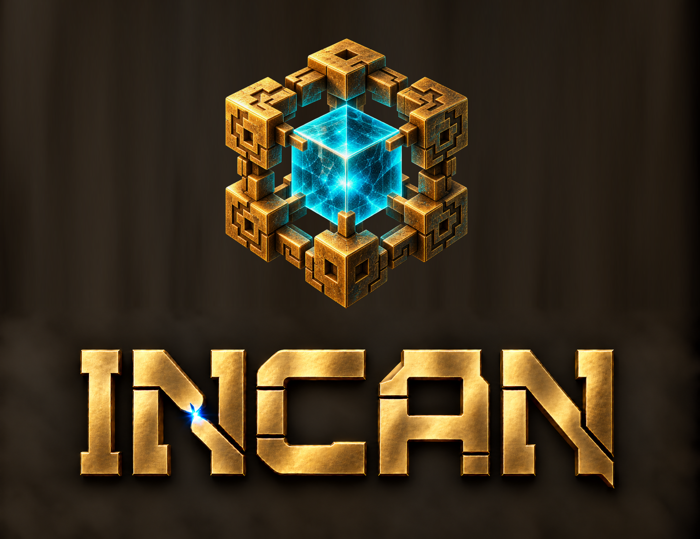
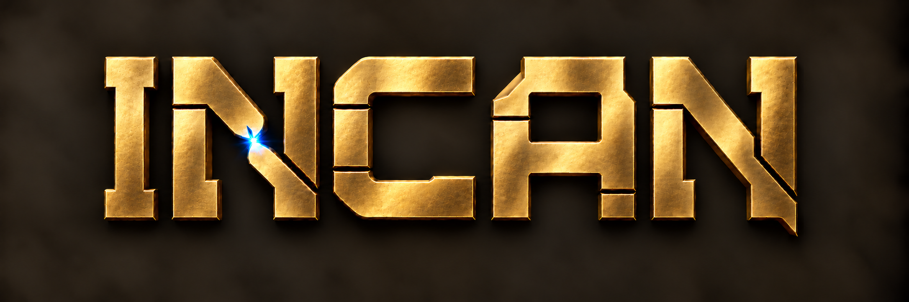
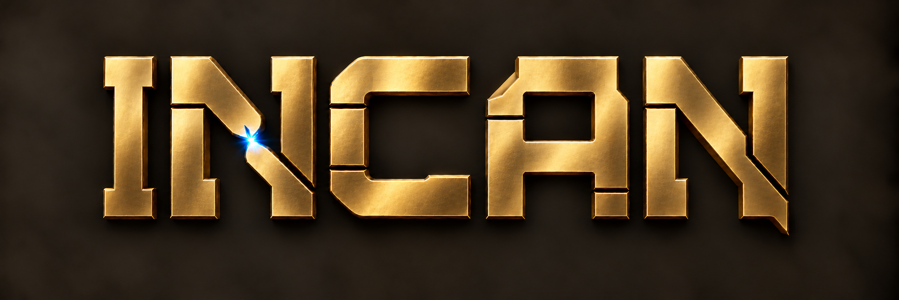
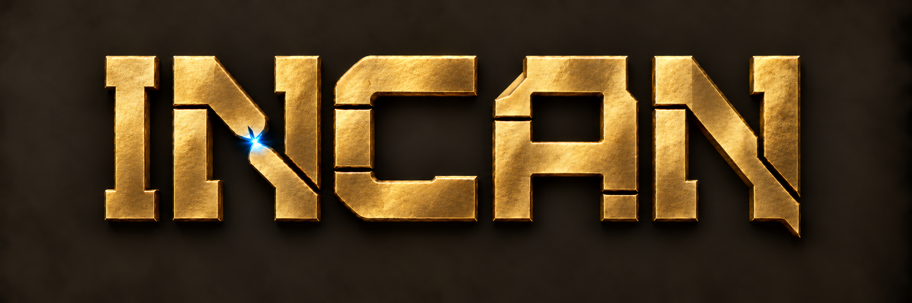
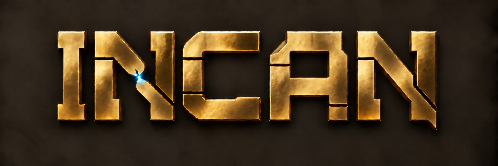

Incan wordmark studies
Selected wordmark with the original tesseract, followed by the earlier studies. Tap an image to open it at full resolution and zoom.
Side by side
Open full image ↗
Stacked
Open full image ↗
Refinement · 1 + 2
Open full image ↗
Option 1
Open full image ↗
Option 2
Open full image ↗
Option 3
Open full image ↗